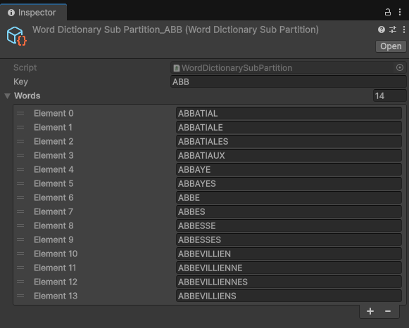
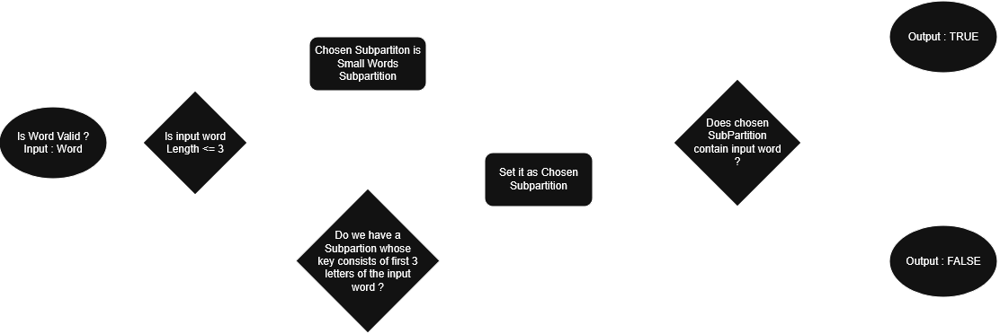

I spent roughly six months working as a programmer at
WildBlood Studio,
primarily on contract projects for other studios.
This gave me the opportunity to work across multiple engines, platforms, codebases, and production
environments.
During this time, I worked with Unreal Engine 5, C++, Blueprints, Unity and C#,
on projects targeting PC, mobile and VR.
I also worked closely with game designers, creative directors and other programmers, often joining
existing projects and adapting to their established frameworks.
Several of the projects I worked on are still under NDA. The descriptions below therefore focus on
my responsibilities, technical challenges and contributions without revealing confidential information.
This was the main project being developed internally by WildBlood Studio: a 3D adventure platformer
made with Unreal Engine 5.
My responsibilities included implementing gameplay features, debugging existing systems and iterating
on gameplay ideas in collaboration with the creative director and game designer.
I worked with both Blueprints and C++, depending on the requirements of each feature.
One aspect I particularly enjoyed was the collaborative nature of the development process. Team members
were encouraged to propose ideas, prototype them and evaluate whether they fit the overall vision of
the game.
Unfortunately, I cannot provide additional details or visual material for this project because it is
still under NDA.
I also worked on the PC and mobile port of an unannounced board game using Unity and C#.
The game is loosely similar to Scrabble, with an additional mechanic allowing players to modify letters
that have already been placed on the board in order to create new words.
One of the main technical challenges was validating words against a French dictionary containing
roughly 300,000 words.
The problem
A straightforward approach would have been to iterate through the entire list every time a player
entered a word. However, repeatedly searching through hundreds of thousands of entries was unnecessarily
expensive, especially on mobile hardware.
The solution
I implemented a partitioned dictionary structure to reduce the number of words that needed to be
considered for each lookup.
Each partition was indexed using the first three letters of a word. I experimented with two- and
four-letter keys, but three-letter partitions provided the best performance in my tests.
Words containing three letters or fewer were stored separately in a dedicated partition.

I then created an editor tool that parsed the original 300,000-word text file and automatically
generated and populated the required WordDictionarySubPartition ScriptableObjects.
Once generated, these partitions were stored inside a higher-level
WordDictionary ScriptableObject, which contained the small-word partition as well as
references to the other partitions.
This allowed the raw dictionary to be processed once during development rather than rebuilding the
entire structure at runtime.
At runtime, the validation process was therefore kept simple: the game identified the appropriate partition from the first letters of the input word, then searched only within that subset rather than scanning the entire dictionary.

This project was a good opportunity to work on data organization, editor tooling and runtime performance while working with a relatively large dataset.
Another contract project I worked on was an unannounced party game based on a French license.
I was responsible for prototyping six different minigames in three weeks, working
closely with game designers.
The short deadline was one of the main challenges of the project. Another was that the prototypes had
to fit into an already established development framework rather than being built from scratch.
I therefore first familiarized myself with the existing framework and its conventions, then used it to
implement and iterate on the different gameplay prototypes. When necessary, I worked directly with the
main development team to understand how the existing systems were intended to be used.
My previous experience developing
Party Knight,
another party game I worked on during my third year at 3Axes Institut, was particularly useful here.
It gave me experience with the common gameplay patterns and rapid iteration required for this type of
project.
I also worked on Worst Food Truck, a VR game about making awful pizzas.
My work on the project included implementing new VR interactions and debugging existing gameplay
systems. One example was adding an alternative way for players to interact with customers: instead of
pressing a button, players could physically pull a rope to ring a bell. However, a significant portion
of my time on this project was dedicated to investigating and fixing existing issues, which gave me
experience working within an already-developed VR codebase and understanding systems that I had not
originally implemented.
This was one of the projects I spent the most time working on at WildBlood Studio.
Together with another programmer, I was tasked with updating an existing VR building game.
The gameplay can be broadly compared to building and decorating a house in a Sims-like game, but with
the interactions taking place directly in VR.
The original game was designed around VR controllers, and one of our main responsibilities was to add
hand tracking support.
Working with an existing architecture
Before implementing the new interaction system, we first analyzed the existing architecture and
interaction systems.
The project had already accumulated a significant amount of functionality, so understanding how the
existing controller-based interactions were structured was an important part of the work.
We then adapted the relevant systems to support hand tracking while preserving the existing gameplay
behavior. Our general strategy was to reinject our collected inputs as early in the chain of commands as
possible, in order to preserve most of the already in-place systems.
UI and UX
We also worked on other parts of the game, including a rework of the user interface following
recommendations from a UX specialist.
This project gave me additional experience working on an established codebase, extending existing
gameplay systems and collaborating with another programmer while integrating feedback from a UX
specialist.